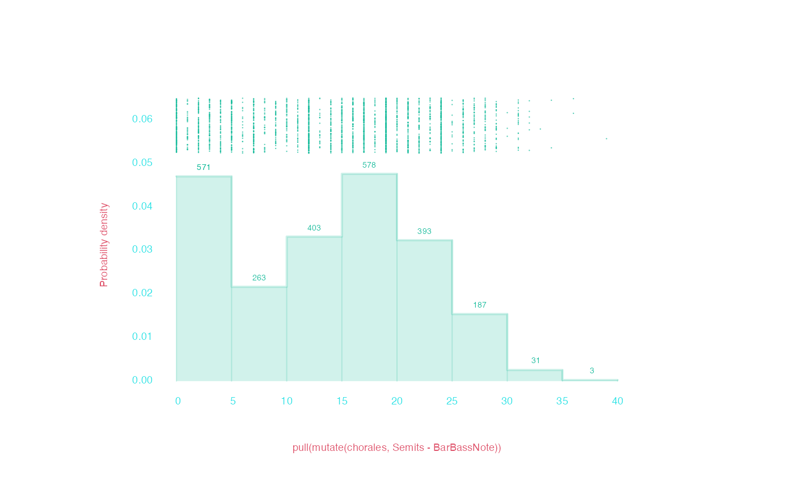

Grouping humdrum data
Nathaniel Condit-Schultz
July 2022
Grouping.RmdWelcome to “Grouping humdrum data”! This article explains functionality humdrum has to break your data into subgroups, and work with each subgroup separately.
In this article, we’ll once again work with our prepackaged
chorales dataset, as we did in our quick start
article.
chorales <- readHumdrum(humdrumRroot, 'HumdrumData/BachChorales/chor.*.krn')
chorales> ######################## vvv chor001.krn vvv #########################
> 1: !!!COM: Bach, Johann Sebastian
> 2: !!!CDT: 1685/02/21/-1750/07/28/
> 3: !!!OTL@@DE: Aus meines Herzens Grunde
> 4: !!!OTL@EN: From the Depths of My Heart
> 5: !!!SCT: BWV 269
> 6: !!!PC#: 1
> 7: !!!AGN: chorale
> 8: **kern **kern **kern **kern
> 9: *ICvox *ICvox *ICvox *ICvox
> 10: *Ibass *Itenor *Ialto *Isoprn
> 11: *I"Bass *I"Tenor *I"Alto *I"Soprano
> 12: *>[A,A,B] *>[A,A,B] *>[A,A,B] *>[A,A,B]
> 13: *>norep[A,B] *>norep[A,B] *>norep[A,B] *>norep[A,B]
> 14: *>A *>A *>A *>A
> 15: *clefF4 *clefGv2 *clefG2 *clefG2
> 16: *k[f#] *k[f#] *k[f#] *k[f#]
> 17: *G: *G: *G: *G:
> 18: *M3/4 *M3/4 *M3/4 *M3/4
> 19: *MM100 *MM100 *MM100 *MM100
> 20: 4GG 4B 4d 4g
> 21: =1 =1 =1 =1
> 22: 4G 4B 4d 2g
> 23: 4E 8cL 4e .
> 24: . 8BJ . .
> 25: 4F# 4A 4d 4dd
> 26: =2 =2 =2 =2
> 27: 4G 4G 2d 4.b
> 28: 4D 4F# . .
> 29: . . . 8a
> 30: 4E 4G 4B 4g
> 31-133::::::::::::::::::::::::::::::::::::::::::::::::::::::::::::::::
> ######################## ^^^ chor001.krn ^^^ #########################
>
> (eight more pieces...)
>
> ######################## vvv chor010.krn vvv #########################
> 1-70::::::::::::::::::::::::::::::::::::::::::::::::::::::::::::::::
> 71: 4D 8F# 4d 4b
> 72: . 4G . .
> 73: 4D . 4c 4a
> 74: . 8F# . .
> 75: 2GG; 2G; 2B; 2g;
> 76: =11 =11 =11 =11
> 77: 2C 2G 2e 2g
> 78: 4AA 4A 4e 4cc
> 79: 4E 4G# 8eL 4b
> 80: . . 8dJ .
> 81: =12 =12 =12 =12
> 82: 4F 4A 4c 4a
> 83: 4C 4G 4c 4e
> 84: 4BB- 4G [2d 4g
> 85: 4AA 4A . 4f
> 86: =13 =13 =13 =13
> 87: 4GG# 4B 4d] 1e;
> 88: 4AA 4A 4c .
> 89: 2EE; 2G#X; 2B; .
> 90: == == == ==
> 91: *- *- *- *-
> 92: !!!hum2abc: -Q ''
> 93: !!!title: @{PC#}. @{OTL@@DE}
> 94: !!!YOR1: 371 vierstimmige Choralgesänge von Johann Sebastian B***
> 95: !!!YOR2: 4th ed. by Alfred Dörffel (Leipzig: Breitkopf und H&a***
> 96: !!!YOR2: c.1875). 178 pp. Plate "V.A.10". reprint: J.S. Bach, 371 ***
> 97: !!!YOR4: Chorales (New York: Associated Music Publishers, Inc., c.1***
> 98: !!!SMS: B&H, 4th ed, Alfred Dörffel, c.1875, plate V.A.10
> 99: !!!EED: Craig Stuart Sapp
> 100: !!!EEV: 2009/05/22
> ######################## ^^^ chor010.krn ^^^ #########################
> (***four global comments truncated due to screen size***)
>
> humdrumR corpus of ten pieces.
>
> Data fields:
> *Token :: characterGroup-apply-combine
One of the fundamental data analysis techniques in R is the group-apply-combine routine. We break our data.frames into groups (by row), apply calculations or manipulations to each group independently, and then (optionally) recombine the groups back into a single data.frame. For example, if we want know the average pitch height (in MIDI pitch) of the chorales, we could run this command:
(We use the summarize() command because we are only
getting one (scalar) value.) But what if wanted to calculate
the mean pitch, for each chorale? We can use the
group_by() command:
chorales |>
midi() |>
group_by(Piece) |>
summarize(mean(.))
> humdrumR:::mean(.) Piece
> <num> <int>
> 1: 60.24017 1
> 2: 62.03896 2
> 3: 61.86735 3
> 4: 61.66129 4
> 5: 60.89189 5
> 6: 60.65600 6
> 7: 61.62428 7
> 8: 60.71788 8
> 9: 61.15638 9
> 10: 60.82418 10How does this work? The group_by() function looks at all
the unique values in the fields we give it—in this case the
Piece field—and breaks the humdrum table into groups based
on those values. So whereever Piece == 1, that’s a group;
wherever Piece == 2, that’s another group, etc. After
group_by() is applied, the
humdrum
dataset is grouped, and any subsequent tidy-commands will automatically
be applied within the groups.
Once a
humdrum
dataset has been grouped, it will stay grouped until you call
ungroup() on it!
More complex grouping
If we like, we can pass more than one field to
group_by(). Groups will be formed for every unique
combinations of values across grouping fields:
> humdrumR:::mean(.) Piece Spine
> <num> <int> <int>
> 1: 47.58730 1 1
> 2: 60.28814 1 2
> 3: 65.57377 1 3
> 4: 70.43478 1 4
> 5: 51.83607 2 1
> 6: 60.79032 2 2
> 7: 66.38182 2 3
> 8: 70.73585 2 4
> 9: 52.28846 3 1
> 10: 59.88000 3 2
> 11: 65.61702 3 3
> 12: 70.82979 3 4
> 13: 51.67347 4 1
> 14: 60.31111 4 2
> 15: 65.38776 4 3
> 16: 70.20930 4 4
> 17: 50.23171 5 1
> 18: 58.53409 5 2
> 19: 64.54118 5 3
> 20: 70.78205 5 4
> 21: 48.35294 6 1
> 22: 60.32258 6 2
> 23: 65.82353 6 3
> 24: 70.38462 6 4
> 25: 51.64444 7 1
> 26: 59.97701 7 2
> 27: 65.57471 7 3
> 28: 70.13415 7 4
> 29: 49.57798 8 1
> 30: 60.08333 8 2
> 31: 66.33708 8 3
> 32: 70.81579 8 4
> 33: 49.90625 9 1
> 34: 59.81159 9 2
> 35: 66.04918 9 3
> 36: 71.65306 9 4
> 37: 49.89130 10 1
> 38: 59.60870 10 2
> 39: 64.82979 10 3
> 40: 69.44186 10 4
> humdrumR:::mean(.) Piece Spine
> <num> <int> <int>You can also create new grouping fields on the fly. For example, what if, instead of groups for four separate voices, we wanted to group bass/tenor and alto/soprano within each piece? We could do this:
chorales |>
midi() |>
group_by(Piece, Spine > 2) |>
summarize(mean(.))
> humdrumR:::mean(.) Spine > 2 Piece
> <num> <lgcl> <int>
> 1: 53.72951 FALSE 1
> 2: 67.66355 TRUE 1
> 3: 56.34959 FALSE 2
> 4: 68.51852 TRUE 2
> 5: 56.00980 FALSE 3
> 6: 68.22340 TRUE 3
> 7: 55.80851 FALSE 4
> 8: 67.64130 TRUE 4
> 9: 54.52941 FALSE 5
> 10: 67.52761 TRUE 5
> 11: 54.06154 FALSE 6
> 12: 67.80000 TRUE 6
> 13: 55.74011 FALSE 7
> 14: 67.78698 TRUE 7
> 15: 54.15026 FALSE 8
> 16: 68.40000 TRUE 8
> 17: 55.04511 FALSE 9
> 18: 68.54545 TRUE 9
> 19: 54.75000 FALSE 10
> 20: 67.03333 TRUE 10
> humdrumR:::mean(.) Spine > 2 Piece
> <num> <lgcl> <int>Grouping isn’t just good for calculating single values. We can, for instance, tabulate each group separately:
chorales |>
kern(simple = TRUE) |>
group_by(Spine) |>
count()
> humdrumR count distribution
> Kern Spine
> 1 2 3 4
> c 62 83 19 68
> c# 32 34 12 37
> d- 16 12 . 7
> d 72 88 43 50
> d# 12 4 16 5
> e- 16 11 3 4
> e 92 79 121 42
> e# 4 1 3 .
> f 38 15 50 18
> f# 49 35 84 14
> g- . 1 . .
> g 65 39 90 43
> g# 19 31 44 15
> a- 10 6 14 15
> a 80 76 69 93
> a# 2 4 3 2
> b- 19 17 9 15
> b 62 85 35 115
> 1 2 3 4
> Kern Spine
> humdrumR count distributionCommon groupings
By file
It is very common in
humdrum
analyses that we want to apply commands grouped by piece. In most cases,
two pieces of music are completely separate entities, so it makes sense
to apply calculations/manipulations separately to each piece. However,
humdrum
won’t (always) do this for you. You might think, “I want to count how
many notes occur in each record” and run the command
group_by(Record)—but watch out! Grouping by
Record will group all the records 1s across all
the pieces, all the record 2s across all the pieces, etc. What you
probably want is (group_by(Piece, Record)). Don’t forget to
group by piece…unless you are sure you don’t want to.
Melodic grouping
In lots of humdrum data, each spine (or at least some spines) in the
data represent a musical part of voice. We often want to isolate each
voice, so group_by(Piece, Spine) gets used a lot. However,
watch out for spine paths and multi-stops, if your data has them—you
might want something like group_by(Piece, Spine, Path), for
example, if you data has spine paths. Check out the complex
syntax for more ideas/options about this.
Recycling results
As usual, if you
use mutate() with grouped data, the results of you command
will be “recycled”—in this case, to fill each group. This can
be very useful for maintaining vectorization. For example, let’s say we
want to calculate the lowest note in each bar.
chorales |>
semits() |>
group_by(File, Bar) |>
mutate(BarBassNote = min(Semits)) |>
ungroup() -> chorales
chorales> ######################## vvv chor001.krn vvv #########################
> 1: !!!COM: Bach, Johann Sebastian
> 2: !!!CDT: 1685/02/21/-1750/07/28/
> 3: !!!OTL@@DE: Aus meines Herzens Grunde
> 4: !!!OTL@EN: From the Depths of My Heart
> 5: !!!SCT: BWV 269
> 6: !!!PC#: 1
> 7: !!!AGN: chorale
> 8: **semits **semits **semits **semits
> 9: . . . .
> 10: . . . .
> 11: . . . .
> 12: *>[A,A,B] *>[A,A,B] *>[A,A,B] *>[A,A,B]
> 13: *>norep[A,B] *>norep[A,B] *>norep[A,B] *>norep[A,B]
> 14: *>A *>A *>A *>A
> 15: *clefF4 *clefGv2 *clefG2 *clefG2
> 16: . . . .
> 17: . . . .
> 18: . . . .
> 19: . . . .
> 20: -17 -17 -17 -17
> 21: =1 =1 =1 =1
> 22: -8 -8 -8 -8
> 23: -8 -8 -8 .
> 24: . -8 . .
> 25: -8 -8 -8 -8
> 26: =2 =2 =2 =2
> 27: -10 -10 -10 -10
> 28: -10 -10 . .
> 29: . . . -10
> 30: -10 -10 -10 -10
> 31-133::::::::::::::::::::::::::::::::::::::::::::::::::::::::::::::::
> ######################## ^^^ chor001.krn ^^^ #########################
>
> (eight more pieces...)
>
> ######################## vvv chor010.krn vvv #########################
> 1-70::::::::::::::::::::::::::::::::::::::::::::::::::::::::::::::::
> 71: -17 -17 -17 -17
> 72: . -17 . .
> 73: -17 . -17 -17
> 74: . -17 . .
> 75: -17 -17 -17 -17
> 76: =11 =11 =11 =11
> 77: -15 -15 -15 -15
> 78: -15 -15 -15 -15
> 79: -15 -15 -15 -15
> 80: . . -15 .
> 81: =12 =12 =12 =12
> 82: -15 -15 -15 -15
> 83: -15 -15 -15 -15
> 84: -15 -15 -15 -15
> 85: -15 -15 . -15
> 86: =13 =13 =13 =13
> 87: -20 -20 -20 -20
> 88: -20 -20 -20 .
> 89: -20 -20 -20 .
> 90: == == == ==
> 91: *- *- *- *-
> 92: !!!hum2abc: -Q ''
> 93: !!!title: @{PC#}. @{OTL@@DE}
> 94: !!!YOR1: 371 vierstimmige Choralgesänge von Johann Sebastian B***
> 95: !!!YOR2: 4th ed. by Alfred Dörffel (Leipzig: Breitkopf und H&a***
> 96: !!!YOR2: c.1875). 178 pp. Plate "V.A.10". reprint: J.S. Bach, 371 ***
> 97: !!!YOR4: Chorales (New York: Associated Music Publishers, Inc., c.1***
> 98: !!!SMS: B&H, 4th ed, Alfred Dörffel, c.1875, plate V.A.10
> 99: !!!EED: Craig Stuart Sapp
> 100: !!!EEV: 2009/05/22
> ######################## ^^^ chor010.krn ^^^ #########################
> (***four global comments truncated due to screen size***)
>
> humdrumR corpus of ten pieces.
>
> Data fields:
> *BarBassNote :: integer (**semits tokens)
> Semits :: integer (**semits tokens)
> Token :: characterWhat did this command do? It looked at every bar in each file and
found the lowest note, then “recycled” that note throughout the bar.
Since the lowset-notes have been recycled, there is one value for each
and every note in Token so everything is still neatly
vectorized. This means we can calculate the harmonic interval above each
bar’s bass note by just going:
